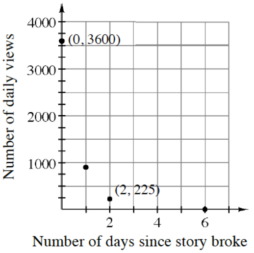
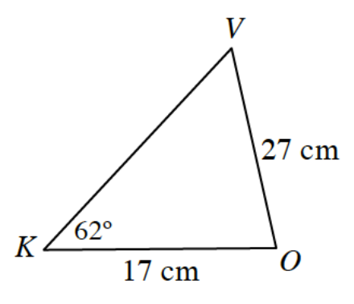
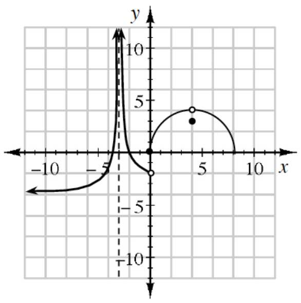

A technique similar to rationalizing the denominator can be used to rewrite some trigonometric expressions in different forms. For example, multiply numerator and denominator of \(\frac{\sin(\theta)}{1+\cos(\theta)}\) by \(1-\cos(\theta)\) to rewrite the expression with one term in the denominator. Then rewrite the expression in terms of other trigonometric functions.
Rewrite each of the following expressions in terms of \(x\), where \(x\) is any real number. Use the unit circle to justify your answers.
\(\sin(\pi+x)=\underline{\ \ \ \ \ \ \ }\)
\(\cos(\pi+x)=\underline{\ \ \ \ \ \ \ }\)
\(\tan(\pi+x)=\underline{\ \ \ \ \ \ \ }\)
\(\sin(2\pi-x)=\underline{\ \ \ \ \ \ \ }\)
\(\cos(2\pi-x)=\underline{\ \ \ \ \ \ \ }\)
\(\tan(2\pi-x)=\underline{\ \ \ \ \ \ \ }\)
Graph two complete cycles of each of the following trigonometric functions. Then state the amplitude, period, and any shifts or reflections of the graph.
\(f(x)=-2\sin(x)-3\)
\(f(x)=5\cos\left(\pi(x-5)\right)\)
Approximate \(A\left(\frac{1}{x},1\le x\le5\right)\) using eight left endpoint rectangles. Use sigma notation to show the sum of the areas of the rectangles.
Given \(k(x)=\left\{\begin{array}{ll}2x^2-4&\text{for }x<2\\-3x+10&\text{for }x\geq2\end{array}\right.\).
Is \(k(x)\) continuous at \(x=2\)? Explain.
If \(j(x)=k(x+1)\), what is the function for \(j(x)\)?
When a news story breaks, it can generate a lot of interest, but it does not take long before another story diverts that interest. At right is a graph depicting the number of daily views for a news story about Syria and the United Nations.

Write an equation to model the situation.
If this model is typical of how interest declines for a news story, what is the half-life of interest in the story?
Write an equation that models this phenomenon for any initial value of views \((I)\).
Solve the triangle at right.

Use the graph to evaluate each of the following limits.

\(\lim_{x\to 4} f(x)\)
\(\lim_{x\to 0^-} f(x)\)
\(\lim_{x\to -\infty} f(x)\)
\(\lim_{x\to 0} f(x)\)
\(\lim_{x\to 3} f(x)\)